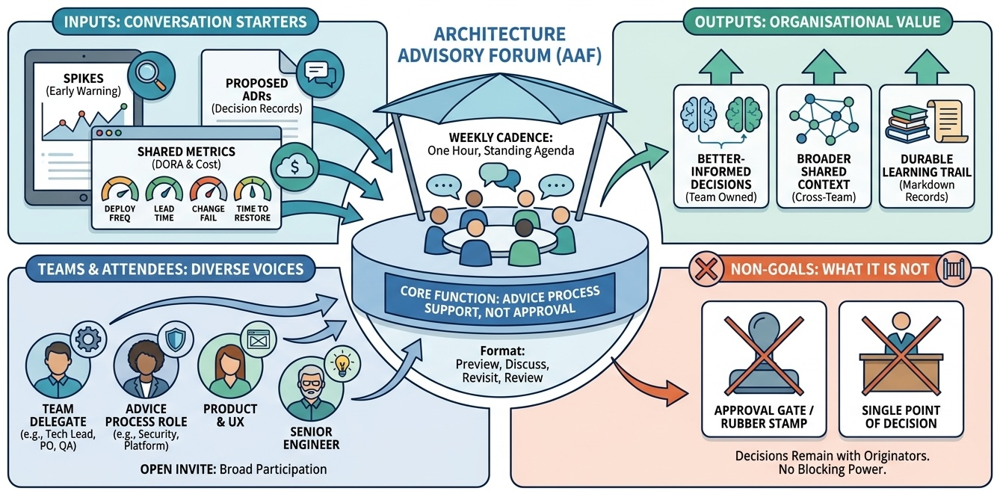

Architecture
Architecture Advisory Forum as a Standing Advice Ritual

Inspired by Andrew Harmel-Law, 'Scaling the Practice of Architecture, Conversationally'
Architecture

Inspired by Andrew Harmel-Law, 'Scaling the Practice of Architecture, Conversationally'